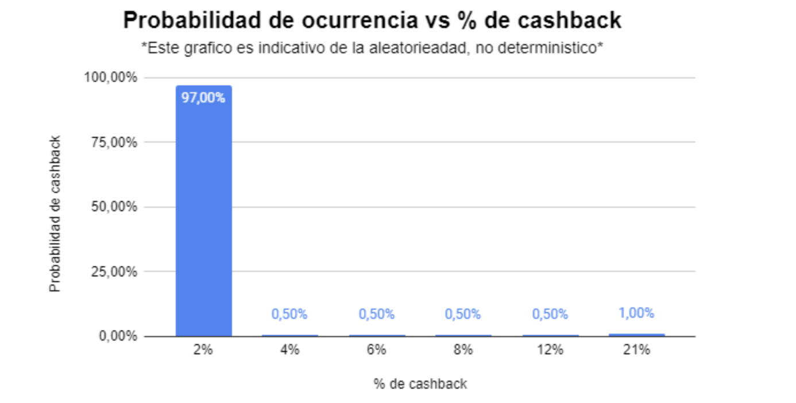
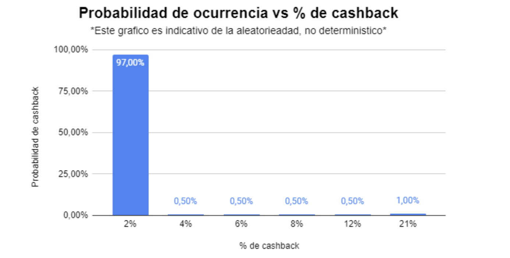

¿Qué probabilidad hay de obtener el 21% de cashback en Belo?
2023 Feb 24
See all posts
¿Qué probabilidad hay de obtener el 21% de cashback en Belo?
Alguna vez soñaste con ganarte el 21% de cashback en Belo? Pasá y
fijate que tan probable es que lo ganes.
Preparar un final de probabilidad y estadística durante un mes motivo
preguntarme acerca de la probabilidad de obtener el cashback del 21% de
Belo, esencialmente, conocer la distribución de probabilidades de
obtener un determinado porcentaje de cashback.
Belo, como otros proveedores de servicios cripto, ofrece cashback
variable aleatorio en cada compra que se realice. Vos
comprás con la tarjeta y ellos te devuelven un porcentaje, entre 2% y
21% del total de la compra.
Revisando https://help.belo.app/ encontré la respuesta en sus
términos y condiciones. Imagino que habrá una obligatoriedad regulatoria
pero no deja de ser buena info a la hora de decidir o no sumarse a la
beloneta (u otras criptonetas).
Antes de spoilear, vamos a aprovechar para repasar algunos
formalismos probabilísticos 🙂
Variables aleatorias
Por definición, una variable aleatoria \(f\) asociada a un experimento \(X\) es una función
\[
f_X: A \subseteq \mathbb{R} \to [0,1]
\]
Es decir una función que a cada valor de un subconjunto real \(A\), asigna un valor del intervalo \([0,1]\). Por ejemplo, supongamos que
definimos el experimento
\(X\) : Resultado del lanzamiento de
un dado
Definimos nuestro \(A=\{1,2,3,4,5,6\}\) el conjunto de los
posibles resultados de \(X\) también
llamado rango de la variable aleatoria, \(R_x\)
Por lo tanto para terminar de definir nuestra variable aleatoria,
debemos asignar a cada valor de \(A\)
uno en \([0,1]\)
Supongamos que el dado está equilibrado, luego cada numero tiene la
misma probabilidad de salir. Luego podemos definir nuestra variable
aleatoria:
\[
f_X(x) = \begin{cases}
1/6 & x = 1 \\
1/6 & x = 2 \\
1/6 & x = 3 \\
1/6 & x = 4 \\
1/6 & x = 5 \\
1/6 & x = 6 \\
\end{cases}
\]
Pero supongamos que el dado no está equilibrado, sino que el 1 y el 2
tienen más probabilidad de salir, nuestra variable podría quedar:
\[
f_X(x) = \begin{cases}
2/6 & x = 1 \\
2/6 & x = 2 \\
1/12 & x = 3 \\
1/12 & x = 4 \\
1/12 & x = 5 \\
1/12 & x = 6 \\
\end{cases}
\]
Esta función que asigna valores en el \([0,1]\) se llama función de
distribución de la variable aleatoria y determina las
probabilidades de obtener un determinado resultado del experimento
asociado a la variable.
Belo y el cashback
Formalicemos lo que significa "comprá con la tarjeta y recibí un
cashback variable entre 2% y 21%"
Definamos la variable aleatoria \(C\) : "Porcentaje de cashback recibido"
Sabemos que el cashback es un porcentaje entre 2% y 21% pero no
sabemos si el intervalo está discretizado o es continuo.
Acá entran a la cancha los TyC.
El interavalo 2% - 21% está discretizado y por lo tanto los posibles
valores de cashback son: 2%, 4%, 6%, 8%, 12%, 21%
Luego podemos definir nuestro rango \(R_C =
\{2,4,6,8,12,21\}\)
Y para terminar de definir nuestra variable aleatoria, tenemos que
asignar a cada valor de \(R_C\) una
proba de ocurrencia en el intervalo \([0,1]\).
De nuevo, los términos y condiciones nos dicen que las probabilidades
de ocurrencia de los porcentajes de cashback son:
\[
f_C(c) = \begin{cases}
0.97 & c = 2 \\
0.005 & c = 4 \\
0.005 & c = 6 \\
0.005 & c = 8 \\
0.005 & c = 12 \\
0.01 & c = 21 \\
\end{cases}
\]
Obteniendo la distribución,

Sí, de cada 100 compras que se hacen con Belo, 97 tienen cashback del
2%, menos de una ¿? tiene cashback de entre 4% y 12% y solo una tiene el
buen 21% de cashback.
Cashback esperado
La siguiente pregunta que podríamos hacernos es: me conviene quedarme
en belo con el cashback variable o irme a uno que tenga un cashback fijo
\(x\)?
Está claro que si otras empresas ofrecen un cashback fijo del 2%,
conviene quedarse en Belo porque aunque las probas son bajas, te puede
salir un cashback mayor a 2% en alguna compra.
Qué pasa si un competidor ofrece un cashback fijo del 2.5%? Ahí ya no
es tan claro que me conviene hacer. Para responder podemos calcular la
esperanza de nuestra variable aleatoria \(C\)
Intuitivamente, la esperanza nos dice el valor que obtendríamos (o
esperaríamos obtener) luego de repetir el experimento muchas veces.
Formalmente,
\[
E(X) = \sum_{x \in R_X}x*f_X(x)
\]
Es decir, sumamos cada valor que puede tomar la variable aleatoria
por la probabilidad de que ocurra ese valor. En \(C\)
\[
\begin{align*}
E(C) &= 2*0.97 + 4*0.005 + 6*0.005 + 8*0.005 + 12*0.005 + 21*0.01 \\
E(C) &= 2.3
\end{align*}
\]
Por lo tanto nos convendría usar el servicio que ofrece un 2.5% fijo
en todas las compras.
¿Qué probabilidad hay de obtener el 21% de cashback en Belo?
2023 Feb 24 See all postsAlguna vez soñaste con ganarte el 21% de cashback en Belo? Pasá y fijate que tan probable es que lo ganes.
Preparar un final de probabilidad y estadística durante un mes motivo preguntarme acerca de la probabilidad de obtener el cashback del 21% de Belo, esencialmente, conocer la distribución de probabilidades de obtener un determinado porcentaje de cashback.
Belo, como otros proveedores de servicios cripto, ofrece cashback variable aleatorio en cada compra que se realice. Vos comprás con la tarjeta y ellos te devuelven un porcentaje, entre 2% y 21% del total de la compra.
Revisando https://help.belo.app/ encontré la respuesta en sus términos y condiciones. Imagino que habrá una obligatoriedad regulatoria pero no deja de ser buena info a la hora de decidir o no sumarse a la beloneta (u otras criptonetas).
Antes de spoilear, vamos a aprovechar para repasar algunos formalismos probabilísticos 🙂
Variables aleatorias
Por definición, una variable aleatoria \(f\) asociada a un experimento \(X\) es una función
\[ f_X: A \subseteq \mathbb{R} \to [0,1] \]
Es decir una función que a cada valor de un subconjunto real \(A\), asigna un valor del intervalo \([0,1]\). Por ejemplo, supongamos que definimos el experimento
\(X\) : Resultado del lanzamiento de un dado
Definimos nuestro \(A=\{1,2,3,4,5,6\}\) el conjunto de los posibles resultados de \(X\) también llamado rango de la variable aleatoria, \(R_x\)
Por lo tanto para terminar de definir nuestra variable aleatoria, debemos asignar a cada valor de \(A\) uno en \([0,1]\)
Supongamos que el dado está equilibrado, luego cada numero tiene la misma probabilidad de salir. Luego podemos definir nuestra variable aleatoria:
\[ f_X(x) = \begin{cases} 1/6 & x = 1 \\ 1/6 & x = 2 \\ 1/6 & x = 3 \\ 1/6 & x = 4 \\ 1/6 & x = 5 \\ 1/6 & x = 6 \\ \end{cases} \]
Pero supongamos que el dado no está equilibrado, sino que el 1 y el 2 tienen más probabilidad de salir, nuestra variable podría quedar:
\[ f_X(x) = \begin{cases} 2/6 & x = 1 \\ 2/6 & x = 2 \\ 1/12 & x = 3 \\ 1/12 & x = 4 \\ 1/12 & x = 5 \\ 1/12 & x = 6 \\ \end{cases} \]
Esta función que asigna valores en el \([0,1]\) se llama función de distribución de la variable aleatoria y determina las probabilidades de obtener un determinado resultado del experimento asociado a la variable.
Belo y el cashback
Formalicemos lo que significa "comprá con la tarjeta y recibí un cashback variable entre 2% y 21%"
Definamos la variable aleatoria \(C\) : "Porcentaje de cashback recibido"
Sabemos que el cashback es un porcentaje entre 2% y 21% pero no sabemos si el intervalo está discretizado o es continuo.
Acá entran a la cancha los TyC. El interavalo 2% - 21% está discretizado y por lo tanto los posibles valores de cashback son: 2%, 4%, 6%, 8%, 12%, 21%
Luego podemos definir nuestro rango \(R_C = \{2,4,6,8,12,21\}\)
Y para terminar de definir nuestra variable aleatoria, tenemos que asignar a cada valor de \(R_C\) una proba de ocurrencia en el intervalo \([0,1]\).
De nuevo, los términos y condiciones nos dicen que las probabilidades de ocurrencia de los porcentajes de cashback son:
\[ f_C(c) = \begin{cases} 0.97 & c = 2 \\ 0.005 & c = 4 \\ 0.005 & c = 6 \\ 0.005 & c = 8 \\ 0.005 & c = 12 \\ 0.01 & c = 21 \\ \end{cases} \]
Obteniendo la distribución,

Sí, de cada 100 compras que se hacen con Belo, 97 tienen cashback del 2%, menos de una ¿? tiene cashback de entre 4% y 12% y solo una tiene el buen 21% de cashback.
Cashback esperado
La siguiente pregunta que podríamos hacernos es: me conviene quedarme en belo con el cashback variable o irme a uno que tenga un cashback fijo \(x\)?
Está claro que si otras empresas ofrecen un cashback fijo del 2%, conviene quedarse en Belo porque aunque las probas son bajas, te puede salir un cashback mayor a 2% en alguna compra.
Qué pasa si un competidor ofrece un cashback fijo del 2.5%? Ahí ya no es tan claro que me conviene hacer. Para responder podemos calcular la esperanza de nuestra variable aleatoria \(C\)
Intuitivamente, la esperanza nos dice el valor que obtendríamos (o esperaríamos obtener) luego de repetir el experimento muchas veces.
Formalmente,
\[ E(X) = \sum_{x \in R_X}x*f_X(x) \]
Es decir, sumamos cada valor que puede tomar la variable aleatoria por la probabilidad de que ocurra ese valor. En \(C\)
\[ \begin{align*} E(C) &= 2*0.97 + 4*0.005 + 6*0.005 + 8*0.005 + 12*0.005 + 21*0.01 \\ E(C) &= 2.3 \end{align*} \]
Por lo tanto nos convendría usar el servicio que ofrece un 2.5% fijo en todas las compras.